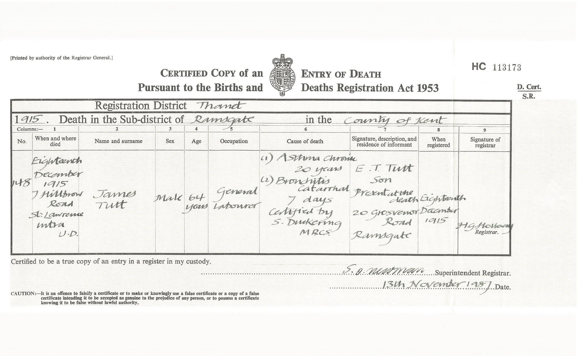
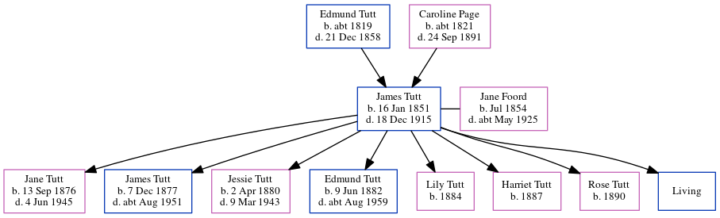

James Tutt 1851 - 1915
[ Home ] | [ Calendar ] | [ Surnames Index ] | [ Errors ] | [ Family History ]A general labourer and the child of Edmund Tutt (a sawyer) and Caroline Page (a laundress), James Tutt, the great-great-uncle of Nigel Horne, was born in Dover, Kent, England on 16 Jan 18511,2,3,4,5,6,7,8 and married Jane Foord (a general shop with whom he had 8 children: Jane Eliza Caroline, James Richard Edmund, Jessie Maria, Edmund Thomas, Lily, Harriet, Rose Elizabeth and Frank, along with 1 surviving child) at St Lawrence Parish Church, St Lawrence, Thanet, Kent, England on 29 Apr 18769 (KFHS CD 29).
During his life, he was living at 40 George Street, Buckland, Kent on 30 Mar 185115 - less than a mile from his sister Jane Tutt who was living at 40 George Street, Buckland, Kent; at 13 Shooter's Hill, Buckland, Kent on 7 Apr 186114 - less than a mile from his sister Jane Tutt who was living at 13 Shooter's Hill, Buckland, Kent; at 18 Clarence Terrace, Ramsgate, Kent on 3 Apr 188113; at 10 Clarence Road, Ramsgate, Kent on 5 Apr 189110; at 8 Hillbrow Road, St Lawrence in Thanet on 31 Mar 190111 - less than a mile from his nephew Isaac Horne who was living at 15 Haine Cottages, St Lawrence in Thanet and his nephew Charles Horne, nephew Edmund Horne and sister Jane Tutt who were living at 15 Haine Cottages, St Lawrence in Thanet -; and at 7 Hillbrow Road, St Lawrence in Thanet on 2 Apr 191112 - less than a mile from his nephew Isaac Horne who was living at 4 Newington Terrace, St Lawrence in Thanet which is where he died on 18 Dec 19158 ((1) Asthma Chronic 20 years; (2) Bronchitis Catarrhal).
Parents
- Edmund was born c. 1819
- Caroline Bromley was born c. 1821
Children
- Jane Eliza Caroline was born on 13 Sept 1876
- James Richard Edmund was born on 7 Dec 1877
- Jessie Maria was born on 2 Apr 1880
- Edmund Thomas was born on 9 Jun 1882
- Lily was born in 1884
- Harriet was born in 1887
- Rose Elizabeth was born in 1890
Citations
- 1851 England Census Online publication - Provo, UT, USA: The Generations Network, Inc., 2005.Original data - Census Returns of England and Wales, 1851. Kew, Surrey, England: The National Archives of the UK (TNA): Public Record Office (PRO), 1851. Data imaged from the National
- 1861 England Census Online publication - Provo, UT, USA: The Generations Network, Inc., 2005.Original data - Census Returns of England and Wales, 1861. Kew, Surrey, England: The National Archives of the UK (TNA): Public Record Office (PRO), 1861. Data imaged from the National
- 1881 England Census Online publication - Provo, UT, USA: The Generations Network, Inc., 2004. 1881 British Isles Census Index provided by The Church of Jesus Christ of Latter-day Saints © Copyright 1999 Intellectual Reserve, Inc. All rights reserved. All use is subject to the
- 1891 England Census Online publication - Provo, UT, USA: The Generations Network, Inc., 2005.Original data - Census Returns of England and Wales, 1891. Kew, Surrey, England: The National Archives of the UK (TNA): Public Record Office (PRO), 1891. Data imaged from The National
- 1901 England Census Online publication - Provo, UT, USA: The Generations Network, Inc., 2005.Original data - Census Returns of England and Wales, 1901. Kew, Surrey, England: The National Archives of the UK (TNA): Public Record Office (PRO), 1901. Data imaged from the National
- 1911 England Census Online publication - Provo, UT, USA: Ancestry.com Operations, Inc., 2011.Original data - Census Returns of England and Wales, 1911. Kew, Surrey, England: The National Archives of the UK (TNA), 1911. Data imaged from the National Archives, London, England.
- England & Wales, FreeBMD Birth Index, 1837-1915 Online publication - Provo, UT, USA: The Generations Network, Inc., 2006.Original data - General Register Office. England and Wales Civil Registration Indexes. London, England: General Register Office. © Crown copyright. Published by permission of the Cont
- England & Wales, FreeBMD Death Index: 1837-1915 Online publication - Provo, UT, USA: The Generations Network, Inc., 2006.Original data - General Register Office. England and Wales Civil Registration Indexes. London, England: General Register Office. © Crown copyright. Published by permission of the Cont
- 1911 England Census Online publication - Provo, UT, USA: Ancestry.com Operations, Inc., 2011.Original data - Census Returns of England and Wales, 1911. Kew, Surrey, England: The National Archives of the UK (TNA), 1911. Data imaged from the National Archives, London, England.
- 1891 England, Wales & Scotland Census - Findmypast (was age 40 and the head of the household)
- 1901 England, Wales & Scotland Census - Findmypast (was age 50 and the head of the household)
- 1911 Census for England & Wales - Findmypast (was age 60 and the head of the household)
- 1881 England, Wales & Scotland Census - Findmypast (was age 30 and the head of the household)
- 1861 England, Wales & Scotland Census - Findmypast (was age 9 and the son of the head of the household)
- 1851 England, Wales & Scotland Census - Findmypast (was age 0 and the son of the head of the household)
Media
James Tutt - birth certificate

James Tutt - Jane Foord - Marriage

James Tutt - death

England & Wales deaths 1837-2007 - BMD/D/1915/4/AZ/001058/108
England & Wales births 1837-2006 - BMD/B/1851/1/SZ/000538/027
England & Wales marriages 1837-2008 - BMD/M/1876/2/AZ/000290/126
England Marriages 1538-1973 - R_848394806
Kent, Canterbury Archdeaconry marriages 1538-1928 - GBPRS/CANT/M/97021907/1
1891 England, Wales & Scotland Census - GBC/1891/0005906040
1901 England, Wales & Scotland Census - GBC/1901/0007457446
1911 Census for England & Wales - GBC/1911/RG14/04529/0585/1
1881 England, Wales & Scotland Census - GBC/1881/0004863742
1851 England, Wales & Scotland Census - GBC-1851-0005956786
Family Tree
Map
Generated by ged2site. Last updated on Jul 3, 2024
Known Issues
Census information missing between Census UK 1861 and Census UK 1881